VOCABULARY · 主題 2000 字 UNIT 16
School．學校
學校、教室用品、科目、上課會用到的動作，共 76 個字。注意科目不可數、不規則動詞和 -y 結尾的複數。
共 76 個單字．點 🔊 聽發音

1elementary schooln.
小學
My little brother is in elementary school.我弟弟讀小學。

2junior high schooln.
國中
I am a junior high school student.我是國中生。
3schooln.
學校
go to school 上學（不加 the）
I go to school by bus.我搭公車上學。

4senior high schooln.
高中
My sister goes to senior high school.我姊姊讀高中。

5classroomn.
教室
Our classroom is on the third floor.我們的教室在三樓。

6gymn.
體育館；健身房
= gymnasium
We play volleyball in the gym when it rains.下雨時我們在體育館打排球。

7playgroundn.
操場；遊樂場
The kids are running on the playground.孩子們在操場上跑。
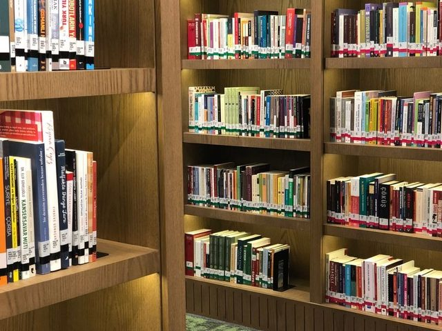
8libraryn.
圖書館
複數 libraries
Please be quiet in the library.在圖書館裡請保持安靜。

9classn.
班級；課
PE class 體育課
We have English class every morning.我們每天早上都有英文課。
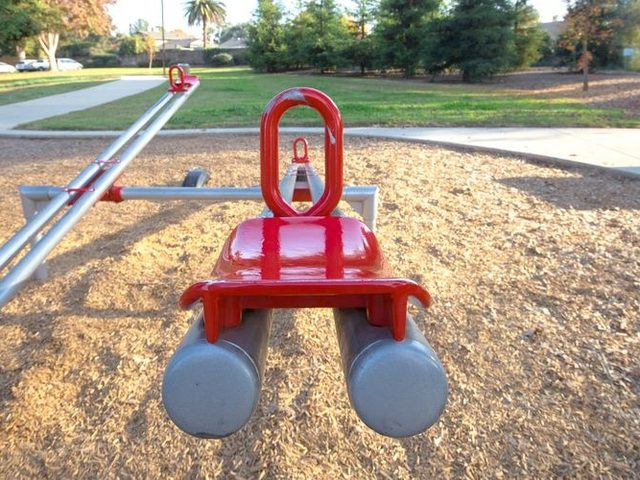
10seesawn.
蹺蹺板
Two children are playing on the seesaw.兩個小孩在玩蹺蹺板。
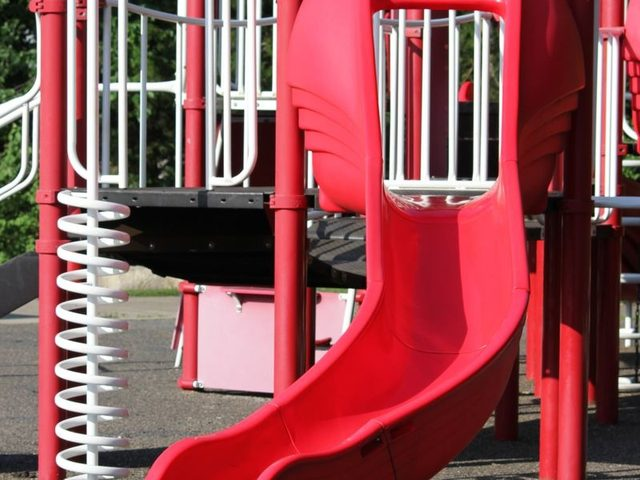
11sliden./v.
溜滑梯；滑動
The little girl went down the slide.小女孩從溜滑梯滑下來。
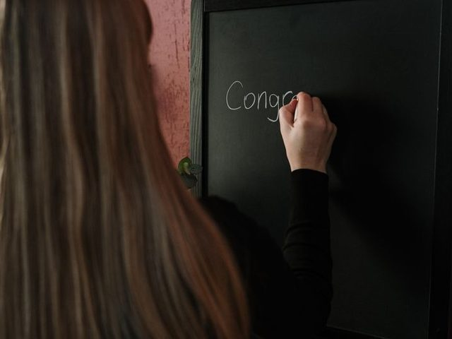
12blackboardn.
黑板
The teacher wrote the date on the blackboard.老師在黑板上寫日期。

13bookn.
書
I borrowed three books from the library.我從圖書館借了三本書。

14chalkn.
粉筆
不可數；a piece of chalk
Can I have a piece of chalk?可以給我一根粉筆嗎？
15dictionaryn.
字典
複數 dictionaries
Look up the word in the dictionary.在字典裡查這個字。
16envelopen.
信封
Put the letter in the envelope.把信放進信封裡。
17erasern.
橡皮擦；黑板擦
Can I borrow your eraser?我可以借你的橡皮擦嗎？
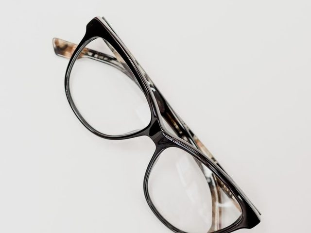
18glassesn.
眼鏡
一定用複數；a pair of glasses
Grandpa wears glasses when he reads.爺爺看書時戴眼鏡。
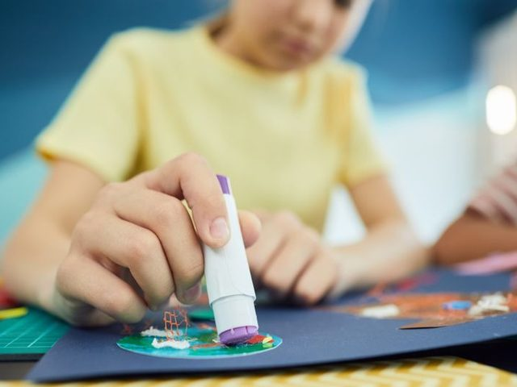
19gluen.
膠水
不可數
Use some glue to stick the photo on the card.用一點膠水把照片黏在卡片上。
20lettern.
信；字母
I wrote a letter to my pen pal.我寫了一封信給我的筆友。
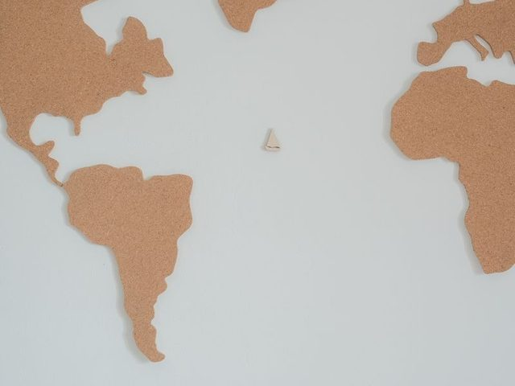
21mapn.
地圖
Let's find Taiwan on the map.我們在地圖上找台灣吧。
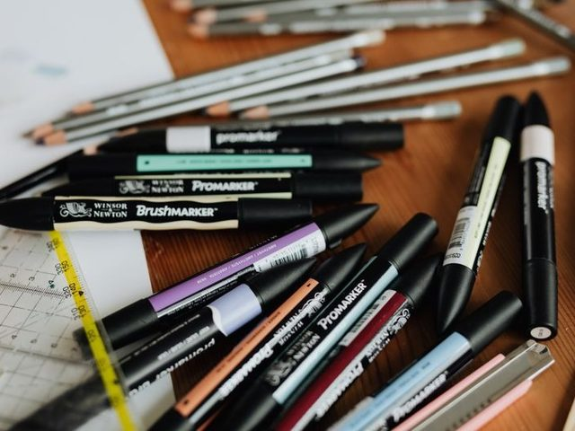
22markern.
麥克筆；油性筆
Write your name with a marker.用麥克筆寫你的名字。
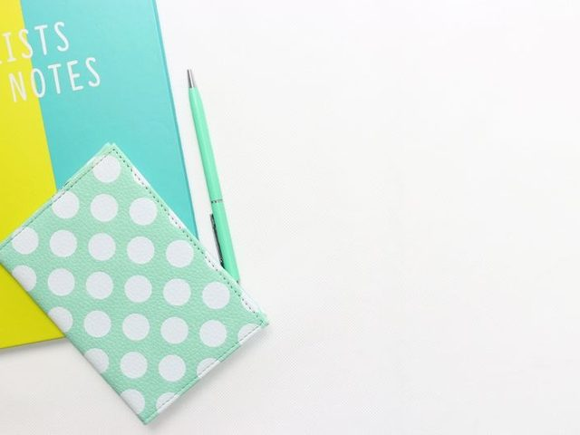
23notebookn.
筆記本
Write the new words in your notebook.把新單字寫在筆記本上。

24pagen.
頁
on page 10 在第 10 頁
Please open your books to page 25.請把書翻到第 25 頁。
25papern.
紙
不可數；a piece of paper
Give me a piece of paper, please.請給我一張紙。

26penn.
原子筆；鋼筆
Write your answers in pen.用原子筆寫答案。
27penciln.
鉛筆
My pencil is too short to use.我的鉛筆太短不能用了。

28picturen.
圖畫；照片
take a picture 拍照
Let's take a picture together.我們一起拍張照吧。

29postcardn.
明信片
I sent Grandma a postcard from Japan.我從日本寄了一張明信片給奶奶。

30presentn.
禮物
= gift
Thank you for the birthday present!謝謝你的生日禮物！

31rulern.
尺
Draw a straight line with a ruler.用尺畫一條直線。
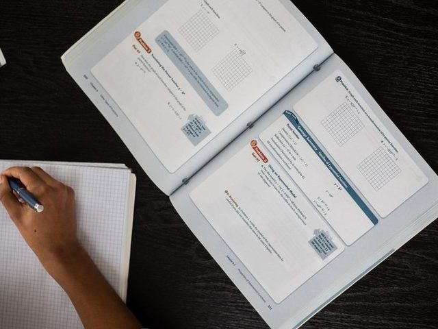
32workbookn.
習作；練習本
Finish page 12 in your workbook.把習作第 12 頁寫完。
33coursen.
課程
Mom is taking a cooking course.媽媽正在上烹飪課程。

34artn.
藝術；美術
We draw and paint in art class.我們在美術課畫畫。
35Chinesen.
中文；中國人
第一個字母大寫
Many people around the world are learning Chinese.世界上很多人在學中文。
36Englishn.
英語
不可數；第一個字母大寫
English is my favorite subject.英文是我最喜歡的科目。

37historyn.
歷史
不可數
We learn about Taiwan's history in class.我們在課堂上學台灣的歷史。
38languagen.
語言
How many languages can you speak?你會說幾種語言？
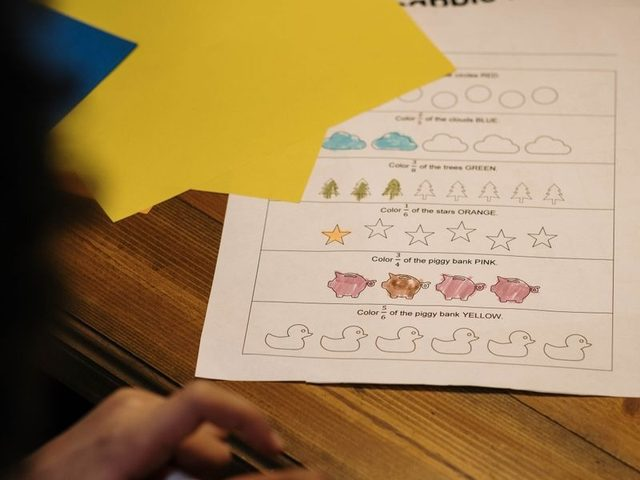
39mathn.
數學
= mathematics；不可數
I have a math test tomorrow.我明天有數學考試。
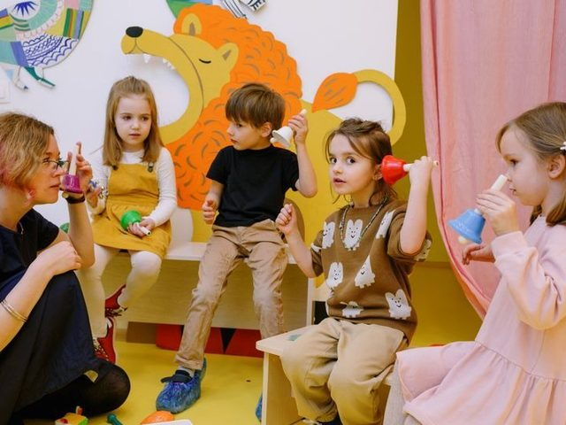
40musicn.
音樂
不可數
We sing songs in music class.我們在音樂課唱歌。
41PEn.
體育
= physical education
We play basketball in PE class.我們在體育課打籃球。
42sciencen.
科學
不可數
We did an experiment in science class.我們在自然課做了一個實驗。
43classmaten.
同班同學
Amy and I are classmates.Amy 和我是同班同學。

44friendn.
朋友
make friends 交朋友
Tom is my best friend.Tom 是我最好的朋友。
45studentn.
學生
There are thirty students in my class.我們班有三十個學生。
46teachern.
老師
Our English teacher is very kind.我們的英文老師很親切。
47answern./v.
答案；回答
answer the question 回答問題
Do you know the answer?你知道答案嗎？

48askv.
問；請求
ask a question 問問題
Can I ask you a question?我可以問你一個問題嗎？
49explainv.
解釋
Can you explain this word to me?你可以跟我解釋這個字嗎？
50failv.
失敗；不及格
He didn't study, so he failed the test.他沒讀書，所以考試不及格。
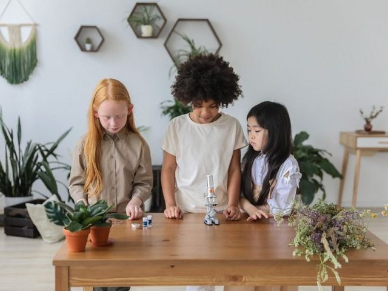
51learnv.
學習
We learn new words every day.我們每天學新單字。
52listenv.
聽
listen to + 名詞；t 不發音
Listen to the teacher carefully.仔細聽老師說。
53markn.
分數；記號
She got full marks on the test.她考試拿了滿分。
54passv.
通過；及格
I passed the math test!我數學考試及格了！
55practicen./v.
練習
practice + V-ing
I practice speaking English every day.我每天練習說英文。
56preparev.
準備
prepare for 為…做準備
We are preparing for the final exam.我們正在準備期末考。
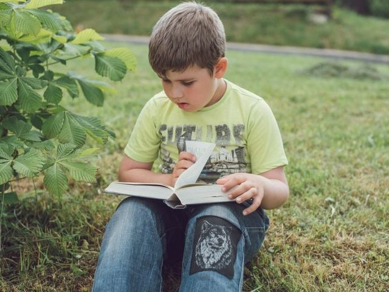
57readv.
閱讀
read – read – read（過去式唸 [rɛd]）
I read a story before bed.我睡前讀一個故事。
58repeatv.
重複
Please repeat after me.請跟著我唸一次。
59sayv.
說
say – said – said
What did you say?你剛才說什麼？
60speakv.
說話；說（語言）
speak – spoke – spoken
Can you speak Japanese?你會說日文嗎？
61spellv.
拼（字）
How do you spell your name?你的名字怎麼拼？

62studyv./n.
讀書；用功；書房
studies／studied
I study in the library after school.我放學後在圖書館讀書。
63talkv./n.
談話；講話
l 不發音；talk to／with
Don't talk in class.上課不要講話。
64teachv.
教
teach – taught – taught
Ms. Lin teaches us math.林老師教我們數學。
65understandv.
了解；懂
understand – understood – understood
Do you understand the question?你懂這個問題嗎？
66writev.
寫
write – wrote – written；writing
Write your name at the top of the page.把你的名字寫在這頁最上面。
67examplen.
例子
for example 例如
Can you give me an example?你可以給我一個例子嗎？
68graden.
年級；成績
in the seventh grade 七年級
I am in the seventh grade.我讀七年級。
69homeworkn.
家庭作業
不可數；do homework
I do my homework after dinner.我晚餐後寫功課。
70knowledgen.
知識
不可數；k 不發音
Reading gives us knowledge.閱讀給我們知識。

71lessonn.
課；教訓
Lesson 3 第三課
Let's start Lesson 3 today.我們今天開始上第三課。
72problemn.
問題；難題
No problem. 沒問題。
I have a problem with my computer.我的電腦有問題。
73questionn.
問題；疑問
ask a question
Raise your hand if you have a question.有問題就舉手。

74quizn.
小考；測驗
複數 quizzes
We have a quiz every Friday.我們每週五有小考。
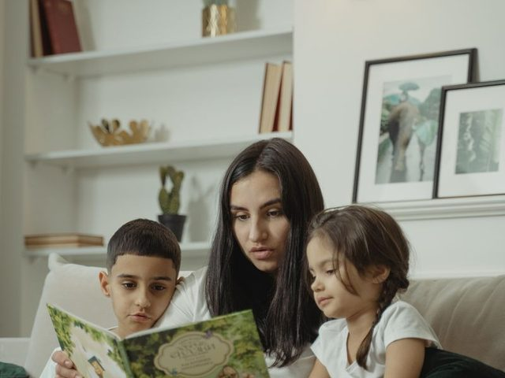
75storyn.
故事
複數 stories
Grandma told us a funny story.奶奶跟我們講了一個好笑的故事。
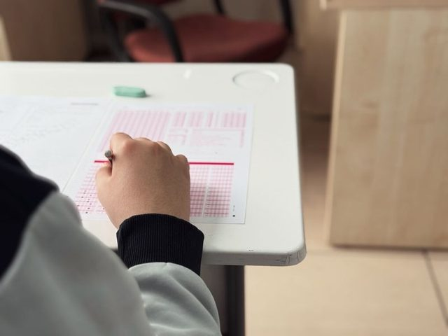
76testn.
測驗；考試
Study hard for the test.為考試好好用功。
FOCUS
學校的科目（都不可數，前面不加 a）
| 英文 | 中文 | 例句 |
|---|---|---|
| English | 英語 | English is my favorite subject. |
| Chinese | 國語；中文 | We have Chinese class today. |
| math | 數學 | Math is hard for me. |
| science | 自然科學 | I like science. |
| history | 歷史 | History is interesting. |
| art / music / PE | 美術／音樂／體育 | We play games in PE class. |
語言名稱 English、Chinese 第一個字母一定大寫。
FOCUS
常用的不規則動詞
| 原形 | 過去式 | 過去分詞 |
|---|---|---|
| say 說 | said | said |
| speak 說（語言） | spoke | spoken |
| teach 教 | taught | taught |
| understand 了解 | understood | understood |
| write 寫 | wrote | written |
| read 讀 | read | read |
read 的過去式拼法不變，但唸成 [rɛd]。
FOCUS
子音 + y 結尾的複數
| 單數 | 複數 |
|---|---|
| library | libraries |
| dictionary | dictionaries |
| story | stories |
| study | studies |
子音 + y：去 y 加 -ies。另外 quiz 的複數是 quizzes（重複 z）。